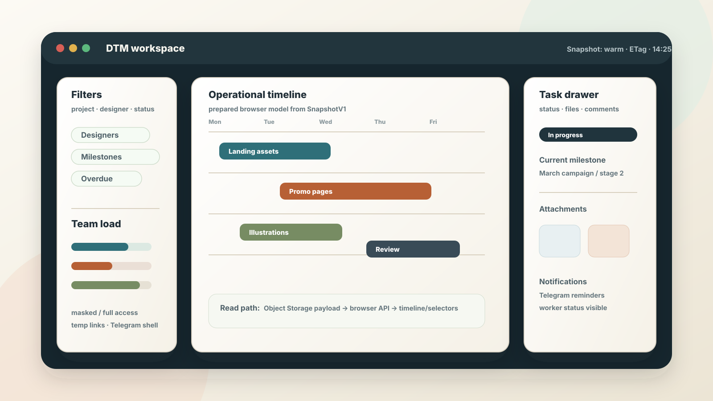
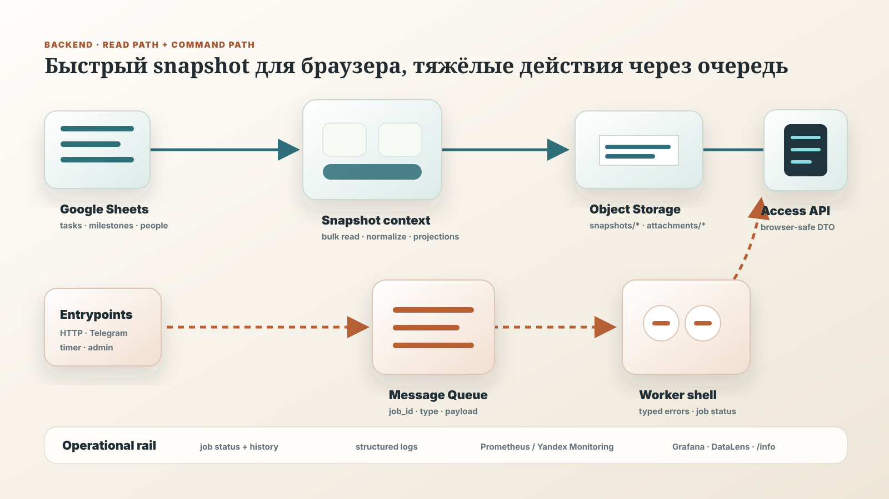
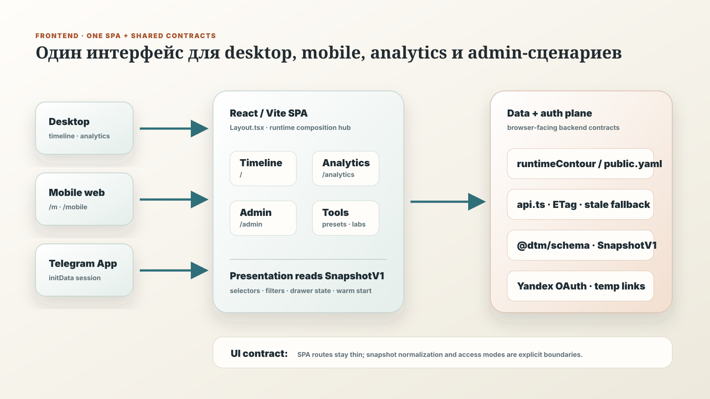
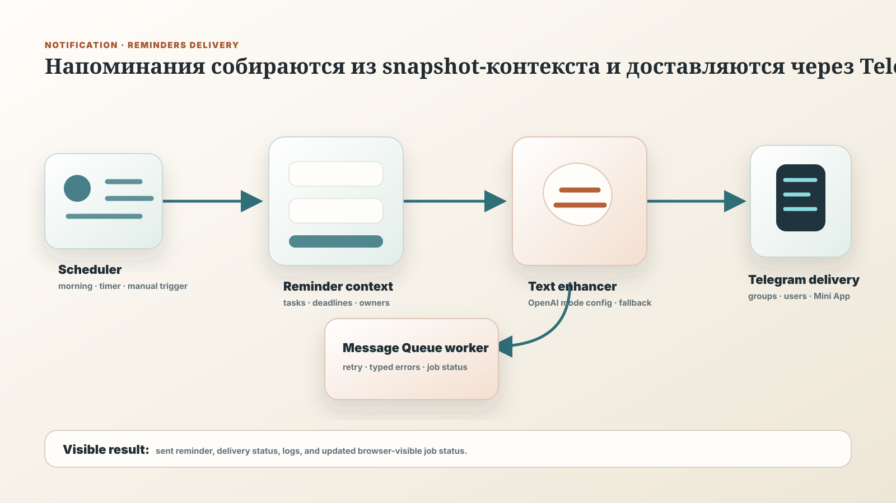

Backend
Python, модульный монолит, thin entrypoints, typed config, snapshot pipeline, access API, queue workers.
PythonYandex CloudObject StorageMessage Queue
DESIGN OPERATIONS PLATFORM
Сервис превращает рабочую таблицу с задачами в наблюдаемую систему: единый таймлайн, загрузка команды, вложения, доступы, напоминания и быстрый интерфейс для ежедневной работы.
Браузер не смог запустить HLS-поток.
Открыть видео напрямуюКороткое промо: как таблица превращается в рабочий интерфейс и управляемый процесс.

Экран сервиса: календарный таймлайн, фильтры, task drawer, вложения и быстрые показатели проекта.

Backend: быстрый read-path отделён от команд, очередей и тяжёлых worker-операций.

Frontend: одна React/Vite SPA собирает desktop, mobile, analytics, admin и Telegram-shell поверх общих контрактов.

Уведомления: планировщик собирает контекст задач, усиливает текст и доставляет напоминания в Telegram.
АННОТАЦИЯ
DTM оставляет привычный источник данных команды — Google Sheets, но строит вокруг него production-like контур: нормализация, snapshot-модель, browser-facing API, интерфейсы для разных сценариев и асинхронные операции с наблюдаемым статусом.
В резюме это пет-проект; по устройству это полноценная система для дизайн-отдела, где важны скорость чтения, аккуратные границы модулей, предсказуемые права доступа и понятная эксплуатация.
СТЕК
Python, модульный монолит, thin entrypoints, typed config, snapshot pipeline, access API, queue workers.
React/Vite SPA с desktop timeline, analytics, mobile shell, admin tools и browser contracts.
Наблюдаемость, job statuses, Telegram reminders, attachments, временные ссылки и masked/full access modes.
РЕПОЗИТОРИИ ПРОЕКТА
СИСТЕМА
Таблица остаётся местом, где команда быстро меняет задачи. Backend регулярно собирает bulk-снимок, приводит данные к доменной модели и публикует подготовленные browser payloads. Frontend читает готовую модель, поэтому интерфейс быстро открывает таймлайн, аналитику и карточки задач.
Действия с побочными эффектами — вложения, рендеринг, напоминания, Telegram-ответы — проходят через явные команды и workers. Это делает систему ближе к реальной эксплуатации: пользователь видит статус, а не ждёт, пока тяжёлая операция зависнет в HTTP-запросе.